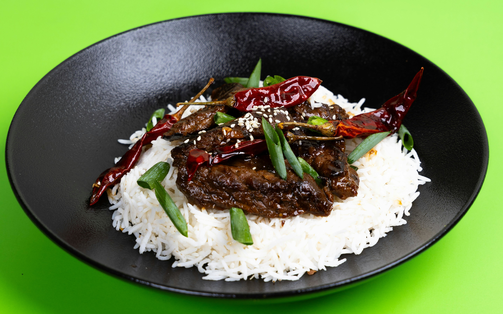

Thai Beef with Basil

Description
Enjoy this stir-fried Thai Beef with Basil recipe! You can feel free to make this your own by adding whatever vegetables you prefer.
Ingredients
- 3 tbsp fish sauce
- 1 tbsp soy sauce
- 1 tbsp brown sugar
- 1 lb beef top round, sliced into thin bite-sized pieces
- 1 tbsp plus 1 tsp vegetable oil
- 1 jumbo sweet onion, cut into 1/4-inch slices
- 3 long red or serrano chili peppers, seeded and sliced
- 3 garlic cloves, sliced
- 2 tsp minced ginger
- 1 cup loosely packed basil leaves
- Optional: cooked rice for serving
Steps
- Combine fish sauce, soy sauce, and brown sugar in a bowl. Add sliced beef and marinate while you prepare the other ingredients, about 15 minutes.
- Heat 1 tbsp oil in 12-inch non stick fry pan until hot. Add beef mixture, and cook until beef is done. Remove beef and set aside.
- Add remaining 1 tsp of oil to the hot pan and add the sliced onions. Cook until tender, or about 5 minutes.
- Add sliced chilis, garlic, and ginger and stir fry for 30 seconds.
- Return beef to pan and combine. Heat until warmed through.
- Remove from heat and add the basil. Serve over rice if desired.
Return to Home Page